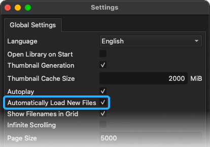
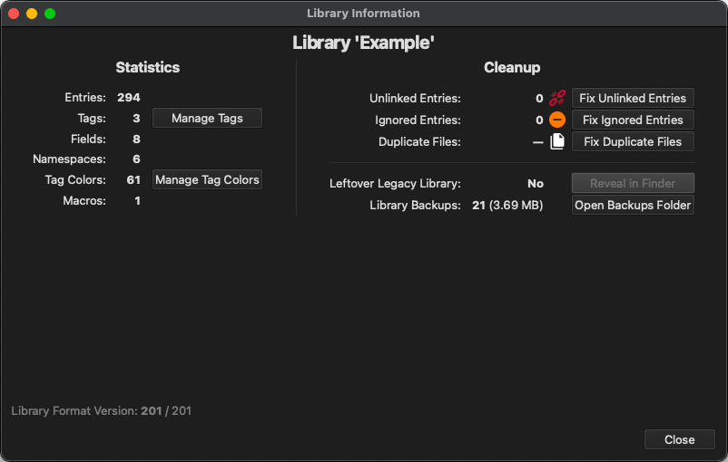

Libraries¶
A TagStudio library represents a folder of content (photos, documents, or any other files) and contains TagStudio data specific to that library (tags, fields, colors, etc.) along with the associations between that data and your files. A library folder can be stored locally on your computer, on an external drive, on a network drive/NAS, or most other locations accessible by your system. TagStudio passively and non-destructively includes contents of this folder (including subfolders) in your library as file entries.
Your files are not moved, copied, or modified in any way!
Planned Library Features & Changes
- The option to store library data separately from library content
- This will enable TagStudio libraries to be created for read-only folders
- This will enable TagStudio to have different libraries for the same content folder(s)
- Multi-root libraries that can read from multiple content folders
- This will reduce the need for using complex
.ts_ignorerules - This will enable having library content that spans across different drives, most notably on Windows, without the need for OS-dependant workarounds such as symlinks
- This will reduce the need for using complex
- Sharable tag packs and color packs
- Global tags, accessible across different libraries
See the Roadmap for more information.
Creating/Opening a Library¶
To create or open a library, go to File -> Open/Create Library in the menu bar or use Ctrl+O (⌘ Command +O on macOS) and chose a folder with file contents you'd like to use as a TagStudio library. If a .TagStudio folder doesn't already exist inside the directory, TagStudio will create one and automatically scan the folder for files to include. Otherwise, the pre-existing library is opened.
Legacy Library Migration
If you open a library created with TagStudio v9.4.2 or earlier in v9.5.0 or later, you'll be walked through a migration process that converts the old ts_library.json save file to the new ts_library.sqlite format. The original JSON file is preserved and can be easily deleted from the View -> Library Information panel once you're satisfied with the migration.
Refreshing Directories¶
TagStudio automatically scans for new or updated files when opening a library by default. This behavior can be toggled in the settings if your library is very large and/or located on a slow drive.

To manually refresh your library at any time, use File -> Refresh Directories from the menu or by using Ctrl+R (⌘ Command +R on macOS).
Library Information Panel¶
The "Library Information" panel can be accessed from Tools -> Library Information in the menu bar, and includes various statistics about your library along with quick access to managing common library cleanup tasks such as relinking entries, updating ignored files, and managing library data backups.

Saving and Creating Backups¶
As of v9.5.0, libraries save automatically as you work.
To create a timestamped backup of your library save file, go to File -> Save Library Backup or use Ctrl+Shift+S (⌘ Command +Shift+S on macOS). Backups are also automatically created whenever the database file is migrated to a newer version as a precautionary measure. Backups currently only include your ts_library.sqlite file, as that's the database file that contains your core TagStudio data. Your own files are not part of any of these backups.
Backups are stored inside the library data folder under .TagStudio/backups/ and can be managed from the Tools -> Library Information panel.
Library Data Folder¶
When you create a library, TagStudio creates a hidden .TagStudio folder at the root of the chosen content folder. This "data folder" contains all TagStudio data for that library. Library data includes what files are included in your library, what tags you've created in that library, which files have what tags, and more. Note that this means tags you create only exist per-library. Global tags that are accessible across libraries are planned for a future update.
Data Folder Structure¶
The library data folder (currently only named .TagStudio) is internally structured as follows:
| File/Folder | Description |
|---|---|
ts_library.sqlite |
The library save file. Stores all entries, tags, fields, and other metadata. (v9.5.0+) |
.ts_ignore |
An optional "ignore" file for excluding files and folders from library scans, similar to a .gitignore file. |
backups/ |
Timestamped backups of the library save file. |
thumbs/ |
Thumbnail images for file previews. |
My Library/ # (Content Folder)
├─ file_1.jpg
├─ file_2.txt
├─ .TagStudio/ # (Data Folder)
│ ├─ ts_library.sqlite (References outer folder for files)
│ ├─ .ts_ignore
│ ├─ backups/
│ ├─ thumbs/
Library Portability¶
Because the .TagStudio data folder is located in your library content folder, and it stores all file entry paths relative to the content folder, your library folder can be freely moved to another location without files becoming unlinked. This also means that if you have a TagStudio library stored on an external drive, it can be freely moved around to different computers running TagStudio with no issues. Likewise, if your library is located on a network drive or NAS, you can access it from different computers that may map the network location differently from each other (note that TagStudio currently does not support multiple users accessing the same library at once).